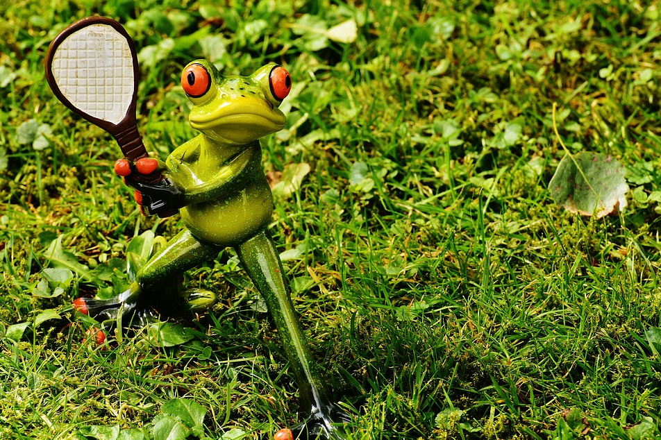
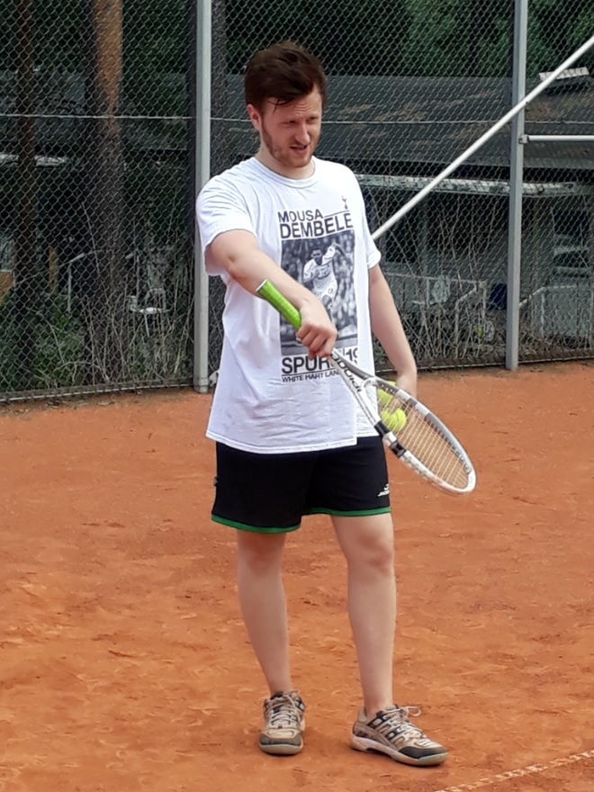

Miksi suosittelen tennistä?
🎾Terveyshyödyt
Tenniksessä koko kroppa joutuu tekemään työtä, vaikka varsinainen lyönti tapahtuu käsillä. Pelatessa täytyy jalkojen ja lantion joustaa ja liikkua yllättävän paljon. Tennis vaatii paljon nopeita suunnanmuutoksia ja reagointia, mikä parantaa koordinaatiokykyä.
Yleinen kunto paranee, varsinkin pidempiä pisteitä ja otteluita pelatessa. Itse olen huomannut etenkin pohjelihasten saavan hyvän treenin aina pelatessa, sillä tenniksessä joutuu paljon hyppimään esimerkiksi syöttäessä.
Tennis on myös melko turvallinen laji, jossa ei juurikaan pääse vakavia loukkaantumisia tapahtumaan. Useimmiten loukkaantumiset ovat vain pieniä rasituksia tai nyrjähdyksiä. Esimerkiksi monet ovat varmaan kuulleet tennisolkapäästä.

Kenelle tennis sopii?
Tennis sopii ihan kaikenikäisille sukupuolesta riippumatta. Vaikka ei olisi ikinä elämässään pelannut tennistä, suosittelen vahvasti kokeilemaan. Tenniksestä saa varmasti jokainen jotain irti kokemuksesta riippumatta.
Tennis on myös suhteellisen edullinen harrastus, sillä siihen ei tarvitse muuta kuin mailan ja palloja. Tenniskenttiä on ilmaisia tai melko edullisesti varattavia.
Itse pelasin nuorena autotallin seinää vasten tai jopa kadulla veljeä vastaan. Peli keskeytyi ja jatkui uudestaan sitä mukaan, kun ohikulkija oli päässyt ohi.

Valmistautumassa syöttämään massakentällä (Kesä 2018).
Miksi juuri tennis?
Tennis yhdistää liikunnan, kilpailun ja jatkuvan kehittymisen. Jokainen harjoitus antaa mahdollisuuden oppia jotain uutta. Siksi tennis on mielestäni harrastus, jonka parissa voi viihtyä pitkään.